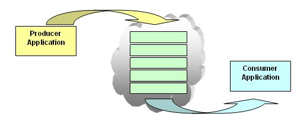

Scaling PHP-based systems, with related technologies. Currently working on a 'secret project' in our secret volcano base, half-way up the Centre Point tower....
(OK, so it's the 13th floor, and we are eye-to-eye with a crane-driver)
I might be able to tell you more very soon
Programming PHP since 1999, PHP v3, (>12 years ago). Previously in everything from a ZX81, BBC/Electron, 6502 to 8086 Assembler, Pascal and C/C++ before PHP
Programming since 198-cough
Beanstalkd live demo
Putting 1000 items in - and then taking them out
 Many long running, or intensive tasks could be done in the background
- Background or Parallel Processing
The classic problem is image uploads. Even happy-snap digital cameras can produce an image that is 3-4+ megabytes. You can't just store that and end up resizing it in the browser. You have to resize it, but you also can't do it in the same PHP process that uploaded it - it takes too much time - and memory.
Even the pic from the 13th floor was 780KB on disk, at least 15MB memory - just to view. To resize, could be 30MB or more.
Don't even try to resize 5+ GB of 1080p quality HD video
Use of queues at Flickr
- the most popular use isn't even about resizing images
Different stages of your system will run at different speeds, and you'll end up with upstream tasks creating ever-growing backlogs when they feed into slower consumers. ... the only real solution is carefully tuning the speed of the original inputs to match the available resources. This is not fun.
-- Pete Warden: June 2011: Queues are the devils own data structures - Pete thinks Hadoop can handle a lot of this.
If you are deleting items from the queue as they are being sent, then you know the DB can be good for millions of records
Many language bindings are available
Quite easy to write, as it's a simple text-based format, ala Memcached
The daemon is equally dumb as a classic MemcacheD. Talking to multiple servers is done from the client-side.
Blocking
I'll wait here till you have something
BeanstalkD was written in C for a Facebook app called 'Causes' - which was written in RubyOnRails
Not to be confused with the 'Beanstalkapp.com', which is remote SVN & GIT version control
OR WITH Amazon's Beanstalk to start EC2 and other AWS services
64KB default limit.
{kind=link}